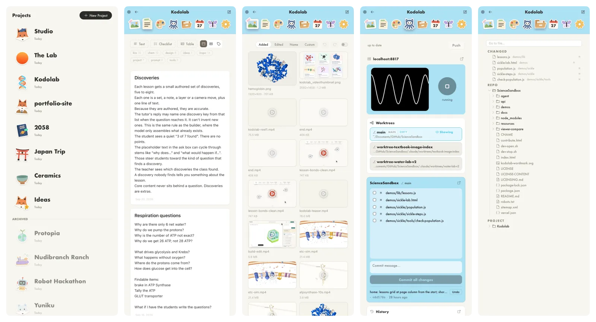

Project Hub
V.0.9
This has become my constant desktop companion. It's a skinny notepad sitting at the side of my screen. It started out with Notes and Media, and then I folded the Git tools, File Directory, and other common tools into it.
I still find the color to be helpful in differentiating between projects. I've toned it down to pastel shades.